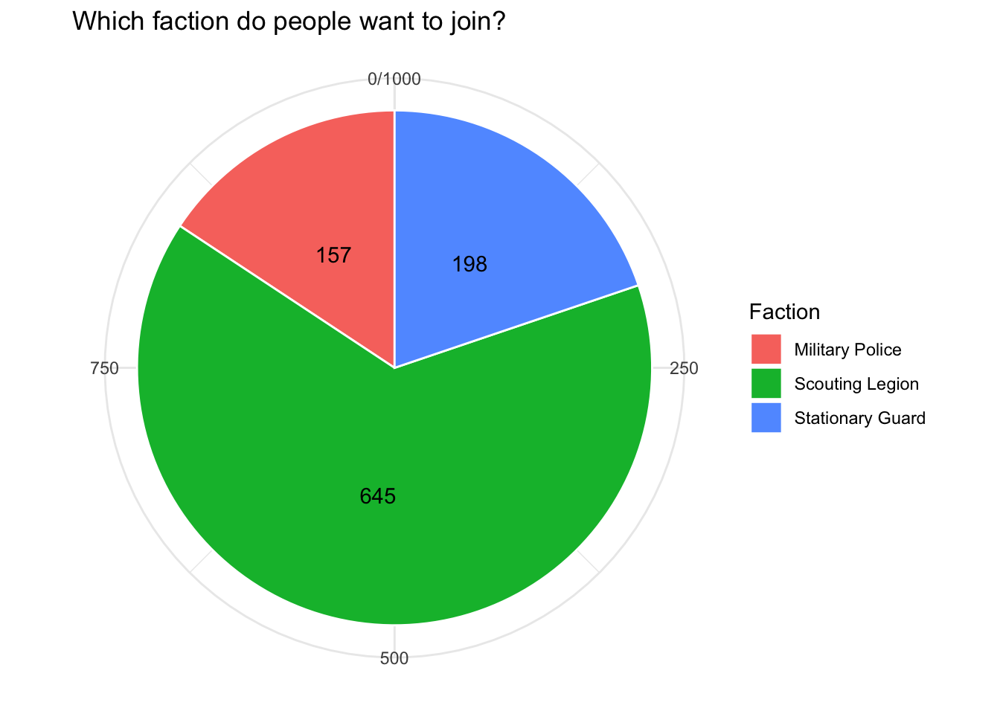
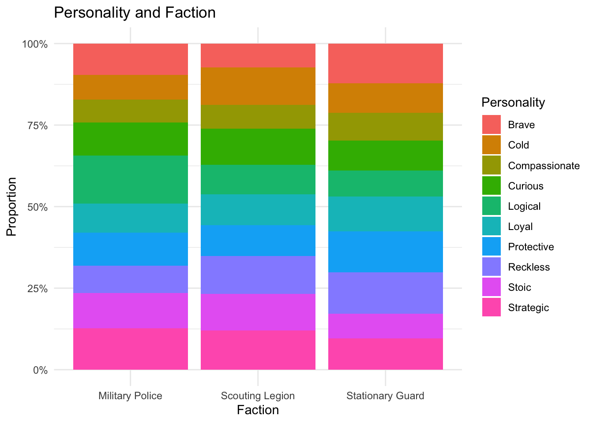
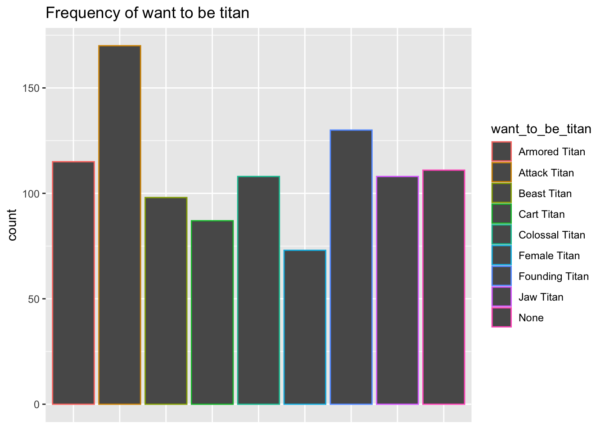

Hi there! Welcome back to another anaylsis of attack on titan. Previously, I analyzed the most and least favored characters in the show, as well as the rating for the show. Those are the basics. Again, if you don’t know, this dataset was generated by ChatGPT. Thanks, Chat, for helping with my portfolio.
First, let’s load the data.
library(readr)
library(tidyverse)## ── Attaching core tidyverse packages ──────────────────────── tidyverse 2.0.0 ──
## ✔ dplyr 1.1.4 ✔ purrr 1.0.4
## ✔ forcats 1.0.0 ✔ stringr 1.5.1
## ✔ ggplot2 3.5.1 ✔ tibble 3.2.1
## ✔ lubridate 1.9.3 ✔ tidyr 1.3.1
## ── Conflicts ────────────────────────────────────────── tidyverse_conflicts() ──
## ✖ dplyr::filter() masks stats::filter()
## ✖ dplyr::lag() masks stats::lag()
## ℹ Use the conflicted package (<http://conflicted.r-lib.org/>) to force all conflicts to become errorslibrary(forcats)
data <- read_csv("aot_fan_dataset_v2.csv")## Rows: 1000 Columns: 10
## ── Column specification ────────────────────────────────────────────────────────
## Delimiter: ","
## chr (7): gender, fav_character, least_fav_character, favorite_aot_season, jo...
## dbl (3): id, age, rating
##
## ℹ Use `spec()` to retrieve the full column specification for this data.
## ℹ Specify the column types or set `show_col_types = FALSE` to quiet this message.First, spoilers here in this portfolio piece! Read with caution!
In this show, human fight against the titans because the titans attack the humans for no reason. Humans have lived in fear forever, and built very tall and thick walls to protect themselves. Naturally, humans organized troops and armies to defend. There are three factions in the army, scouting legion, stationary guard, and military police. Scouting legion is responsible for exploring the outside of the wall. Humans know so little about titans that they need to send these survey corps out there to learn about titans. Outside of the wall, it’s easy for them to encounter titan and they would need to engage in battles. Stationary guard is responsible for taking care of the walls, and maintaining order inside the walls. The walls need to be solidified and repaired constantly. Stationary guard will also need to fight when titans are at the wall. Military police are the ones protecting the safety of the Queen. That said, they live within the most inner wall. FYI, there are three walls, the most inner wall is the safest place for human to live in, and seldom engage in fighting with the titan.
Humans join the army and get the practice they needed. After that, they will decide which faction they would like to join. Joining the scouting legion takes the most courage and needs good fighting skills; you could die easily on this job. Joining the stationary guard is, I guess, the best option because you get to do some actual protecting job, while also keep your own safety. Joining the military police is the easiest choice. You are protected, and don’t need to go on battlefields at all. Most audience despise military police. Most characters do, too; but these people are just very realistic. I won’t be any better than them if I were to make this choice.
That’s a lot of information! Thanks for reading it, but if you didn’t get to read all that, it’s fine. Just understand statistically what I am doing is also fine!
I am beyond intrigued by what faction the audience would like to join. I want to join the scouting legion! I realize that the names are different in my dataset, so I need to mutate that.
data <- data %>%
mutate(join_faction = recode(join_faction, "Garrison" = "Stationary Guard", "Survey Corps" = "Scouting Legion"))
faction_n <- data %>%
count(join_faction)
ggplot(faction_n, aes(x = "", y = n, fill = join_faction)) + geom_col(color = "white") +
coord_polar("y") +
labs(title = "Which faction do people want to join?",
x = NULL,
y = NULL,
fill = "Faction") +
geom_text(
aes(label = n),
position = position_stack(vjust = 0.5)
) +
theme_minimal()
This is what I expected. I think most audience would want to be survey corps.
I am interested in the participants’ personality and how that might be associated with what they want to become.
table(data$join_faction, data$personality)##
## Brave Cold Compassionate Curious Logical Loyal Protective
## Military Police 15 12 11 16 23 14 16
## Scouting Legion 47 74 47 72 58 61 61
## Stationary Guard 24 18 17 18 16 21 25
##
## Reckless Stoic Strategic
## Military Police 13 17 20
## Scouting Legion 75 72 78
## Stationary Guard 25 15 19chisq.test(table(data$join_faction, data$personality))##
## Pearson's Chi-squared test
##
## data: table(data$join_faction, data$personality)
## X-squared = 18.692, df = 18, p-value = 0.411ggplot(data = data, aes(x = join_faction, fill = personality)) +
geom_bar(position = "fill") +
scale_y_continuous(labels = scales::percent) +
labs(
y = "Proportion",
x = "Faction",
fill = "Personality",
title = "Personality and Faction"
) +
theme_minimal()
Given the chi-square result, there is not enough evidence to conclude a significant association between the faction people want to join and their personality. There ain’t much difference in the distribution of personality within each faction.
There are 9 major titans in the show. I would like to exlore next which titan people want to become.
data %>%
count(want_to_be_titan) %>%
arrange(desc(n))## # A tibble: 9 × 2
## want_to_be_titan n
## <chr> <int>
## 1 Attack Titan 170
## 2 Founding Titan 130
## 3 Armored Titan 115
## 4 None 111
## 5 Colossal Titan 108
## 6 Jaw Titan 108
## 7 Beast Titan 98
## 8 Cart Titan 87
## 9 Female Titan 73ggplot(data, aes(x = want_to_be_titan, color = want_to_be_titan)) +
labs(
x = NULL,
title = "Frequency of want to be titan"
) +
geom_bar() +
theme(axis.text.x = element_blank(),
axis.ticks.x = element_blank())
Is there a relationship between want to be titan and personality?
table(data$want_to_be_titan, data$personality)##
## Brave Cold Compassionate Curious Logical Loyal Protective
## Armored Titan 14 15 6 9 8 9 9
## Attack Titan 15 18 12 15 19 19 15
## Beast Titan 6 13 3 10 16 11 8
## Cart Titan 6 8 6 9 10 11 9
## Colossal Titan 7 9 13 14 13 6 8
## Female Titan 5 7 10 10 2 4 14
## Founding Titan 14 11 13 13 9 11 13
## Jaw Titan 11 6 6 12 12 12 16
## None 8 17 6 14 8 13 10
##
## Reckless Stoic Strategic
## Armored Titan 16 14 15
## Attack Titan 17 18 22
## Beast Titan 10 11 10
## Cart Titan 10 8 10
## Colossal Titan 11 16 11
## Female Titan 7 6 8
## Founding Titan 20 11 15
## Jaw Titan 9 11 13
## None 13 9 13chisq.test(table(data$want_to_be_titan, data$personality))##
## Pearson's Chi-squared test
##
## data: table(data$want_to_be_titan, data$personality)
## X-squared = 65.498, df = 72, p-value = 0.6925No, there isn’t a relationship between them.
What about relationship between want to be titan and favorite character?
chisq.test(table(data$want_to_be_titan, data$fav_character))## Warning in chisq.test(table(data$want_to_be_titan, data$fav_character)):
## Chi-squared approximation may be incorrect##
## Pearson's Chi-squared test
##
## data: table(data$want_to_be_titan, data$fav_character)
## X-squared = 84.108, df = 96, p-value = 0.8017Hmmm… This data is confirmed to be randomly generated by Chat. There is no relationship between the categorical variables.
I hope to one day collect real data on these questions!